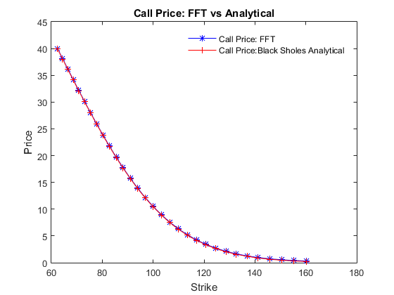

clc; clear;
S0 = 100;
r = 0.05;
q = 0.01;
tau = .75;
sigma = 0.25;
alpha = 1.75;
N = 128;
uplimit = 200;
fast = 0;
[CallFFT CallBS K lambda eta] = BlackScholesFFT(N,uplimit,S0,r,q,tau,sigma,alpha,fast);
disp(' Strikes FFT Price Analytical Price')
u1 = find(round(K*1000)/1000==S0);
du = 15;
[K(u1-du:u1+du) CallFFT(u1-du:u1+du), CallBS(u1-du:u1+du)]
IntegrationIncrement = eta
LogStrikeIncrement = lambda
NumberOfPoints = N
plot(K(u1-du:u1+du), CallFFT(u1-du:u1+du),'b*-',K(u1-du:u1+du), CallBS(u1-du:u1+du),'r+-')
legend('Call Price: FFT ','Call Price:Black Sholes Analytical')
legend('boxoff')
xlabel('Strike')
ylabel('Price')
title('Call Price: FFT vs Analytical')
Strikes FFT Price Analytical Price
ans =
62.4228 40.0145 39.9275
64.4150 38.1246 38.0376
66.4708 36.1872 36.1003
68.5922 34.2058 34.1189
70.7813 32.1850 32.0982
73.0403 30.1316 30.0448
75.3713 28.0540 27.9672
77.7768 25.9626 25.8759
80.2590 23.8699 23.7831
82.8204 21.7900 21.7033
85.4636 19.7389 19.6523
88.1911 17.7336 17.6470
91.0057 15.7916 15.7051
93.9101 13.9304 13.8439
96.9072 12.1665 12.0800
100.0000 10.5147 10.4283
103.1915 8.9874 8.9010
106.4848 7.5941 7.5078
109.8832 6.3408 6.2545
113.3901 5.2297 5.1435
117.0089 4.2596 4.1734
120.7432 3.4257 3.3396
124.5966 2.7203 2.6343
128.5731 2.1335 2.0475
132.6765 1.6535 1.5675
136.9108 1.2674 1.1816
141.2802 0.9624 0.8766
145.7891 0.7257 0.6400
150.4419 0.5452 0.4595
155.2432 0.4101 0.3245
160.1978 0.3108 0.2253
IntegrationIncrement =
1.5625
LogStrikeIncrement =
0.0314
NumberOfPoints =
128
